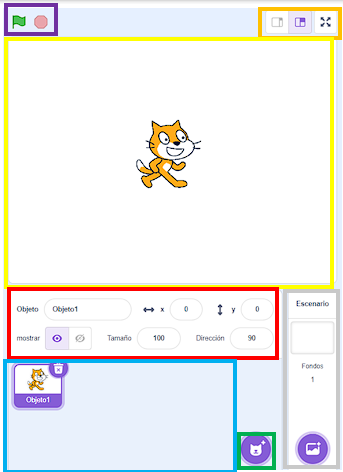

Una vez hemos visto cómo crear nuestra cuenta de Scratch y nuestro primer proyecto desde cero, ahora explicaremos cómo es la interfaz de Scratch, desde sus botones más sencillos hasta los que nos permitirán crear proyectos.
Como podemos observar, Scratch cuenta con una gran cantidad de opciones. En el recuadro naranja, tenemos nuestro espacio de trabajo, donde colocaremos los bloques de código. En la parte superior izquierda, encontramos las siguientes opciones:
Explicación de los botones:
- Scratch (cuadro rojo): Lleva a la página de inicio de Scratch, cerrando cualquier proyecto abierto.
- Settings (cuadro verde claro): Permite cambiar el idioma de la página y los colores de la interfaz.
- Archivo (cuadro verde oscuro): Desde aquí podemos crear un nuevo archivo, guardar proyectos actuales, hacer copias, cargar archivos de la computadora o guardarlos en nuestro dispositivo.
- Editar (cuadro celeste): Permite recuperar objetos eliminados junto con sus bloques asociados. También incluye la opción de activar el modo Turbo para que los bloques de código se ejecuten más rápido.
- Título del proyecto (cuadro azul oscuro): Cambia el título del proyecto, por ejemplo:
- Compartir (cuadro amarillo): Permite compartir proyectos con otros usuarios para que puedan probarlos, comentarlos y calificarlos.
- Ver página del proyecto (cuadro naranja): Esta opción aparece únicamente si el proyecto ha sido compartido. Muestra una ventana como la anterior.
- Tutoriales (cuadro morado): Acceso a una variedad de tutoriales proporcionados por Scratch.
Opciones del panel derecho:
- Icono de carpeta (cuadro rojo): Abre una pestaña con todos los proyectos creados por el usuario.
- Usuario iniciado (cuadro amarillo): Muestra el nombre del usuario que ha iniciado sesión y, al hacer clic, despliega detalles relacionados con la cuenta.
Opciones del lado izquierdo:
- Código (recuadro rojo): Acceso a los bloques de código para construir las funcionalidades del proyecto.
- Disfraces (recuadro celeste): Abre el editor de disfraces, donde se pueden modificar figuras, cambiar colores, agregar elementos nuevos o convertir a bits.
- Sonidos (recuadro amarillo): Permite agregar sonidos, grabarlos, o elegir entre los que ofrece Scratch.
Entorno del lado derecho:

- Ir y Detener (recuadro morado): Ejecuta o detiene los bloques de código.
- Cambiar visualización (recuadro naranja): Modifica el tamaño del escenario (pequeño, grande o pantalla completa).
- Espacio de figuras (recuadro amarillo): Permite ver, mover o eliminar figuras del proyecto.
- Atributos de los objetos (recuadro rojo): Modifica tamaño, posición y visibilidad de los objetos.
- Espacio de objetos (recuadro celeste): Permite seleccionar y modificar los objetos presentes en el proyecto.
- Agregar un objeto (recuadro verde): Agrega objetos nuevos creados por el usuario o proporcionados por Scratch.
- Agregar fondos (recuadro gris): Cambia el fondo predeterminado del escenario.